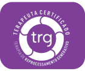

O que é a TRG?
A Terapia de Reprocessamento Generativo (TRG) é focada em resultados, o propósito do terapeuta é te ajudar a resolver os seus traumas emocionais com uma metodologia que faz com que você consiga os resultados que precisa.
Diferentemente de outros métodos terapêuticos, que demoram muitas sessões ou até anos, a TRG é uma metodologia de terapia breve com a proposta de ter menos sessões em um processo objetivo, visando diminuir o tempo de tratamento do cliente buscando sempre a melhora no seu campo emocional.